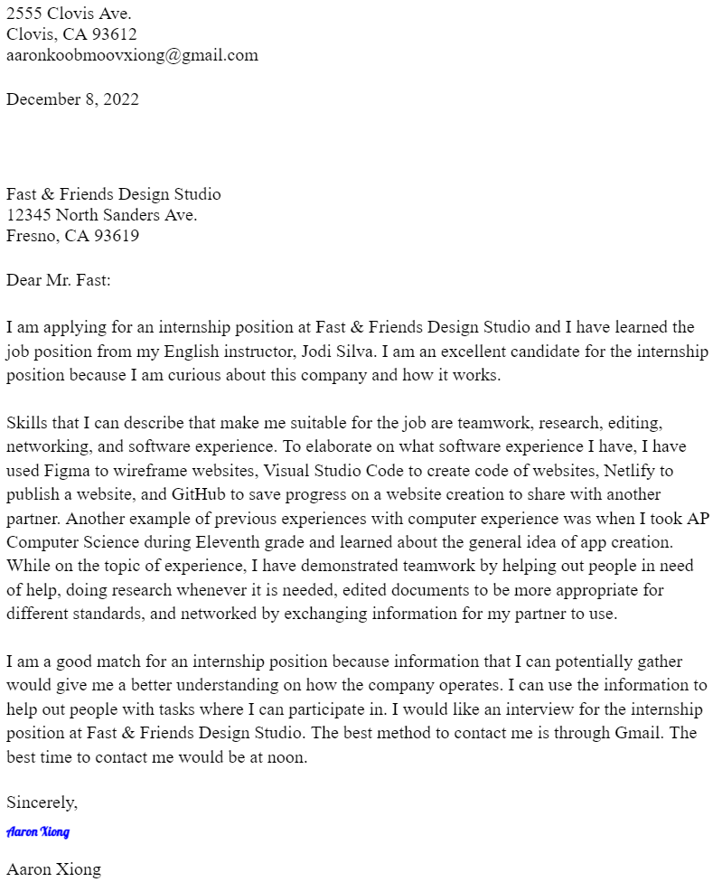

Water Conservation Project
This is a research writing assignment that we had to make into a website. Our class had to do research on social issues and encourage others to support the change on these issues. The social issue I covered was water conservation because water drought has been a big deal in California, especially in the central region. This website was created for those who want to conserve water.

Cover Letter: Fast & Friends Internship
This writing assignment is a persuasive and descriptive essay about why I would want to work at Fast & Friends. Even though this may be a fake company, my other students and I had to write a letter going into great detail to tell them why they are best for the job. It was not until later that I realized that we did a cover letter because it would be for another assignment.
